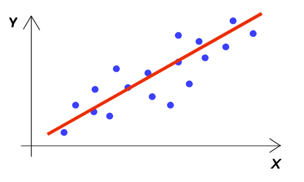

Package org.sm.smtools.math.lslr
Class LSLR
java.lang.Object
org.sm.smtools.math.lslr.LSLR
public final class LSLR
extends java.lang.Object
The
LSLR class offers least squares linear regression for 2D data.
The 2D data consists of a ArrayList of Point2D.Double objects (which contain
x and y values). The least squares linear regression (LSLR) will be calculated as follows:
- y = (slope * x) + intercept
z* 
Along with the LSLR, this class also calculates the mean and the standard deviation of the y values.
Note that an application should check whether or not the LSLR operation was successful,
using the isSuccessful() method.
Note that this class cannot be subclassed!
- Version:
- 05/05/2014
- Author:
- Sven Maerivoet
-
Constructor Summary
-
Method Summary
Modifier and Type Method Description voidclear()Sets all the object's fields equal to zero.doublegetIntercept()Returns the intercept of the LSLR operation on the 2D-data points.doublegetMean()Returns the mean of the y-values of the 2D-data pointsdoublegetSlope()Returns the slope of the LSLR operation on the 2D-data points expressed in radians.doublegetStandardDeviation()Returns the standard deviation of the y-values of the 2D-data points.booleanisSuccessful()Returns whether or not the LSLR operation was successful.voidsetDataPoints(java.util.ArrayList<java.awt.geom.Point2D.Double> dataPoints)Uses the given 2D-data points to calculate the slope, intercept, mean and standard deviation.Methods inherited from class java.lang.Object
clone, equals, getClass, hashCode, notify, notifyAll, toString, wait, wait, wait
-
Constructor Details
-
LSLR
public LSLR()Constructs anLSLRobject with all fields cleared.- See Also:
LSLR(ArrayList),clear()
-
LSLR
public LSLR(java.util.ArrayList<java.awt.geom.Point2D.Double> dataPoints)Constructs anLSLRobject with the given 2D-data points.The
LSLR'sslope, intercept, mean and standard deviation are available after the object's construction.- Parameters:
dataPoints- anArrayListof 2D-data points- See Also:
LSLR(),getSlope(),getIntercept(),getMean(),getStandardDeviation()
-
-
Method Details
-
setDataPoints
public void setDataPoints(java.util.ArrayList<java.awt.geom.Point2D.Double> dataPoints)Uses the given 2D-data points to calculate the slope, intercept, mean and standard deviation.- Parameters:
dataPoints- anArrayListof 2D-data points- See Also:
Point2D,getSlope(),getIntercept(),getMean(),getStandardDeviation()
-
clear
public void clear()Sets all the object's fields equal to zero. -
isSuccessful
public boolean isSuccessful()Returns whether or not the LSLR operation was successful. The operation fails whenever:- the number of 2D-data points is zero
- the result is a vertical line (i.e., the slope is infinite)
- Returns:
trueif the LSLR operation was successful,falseif it failed
-
getSlope
public double getSlope()Returns the slope of the LSLR operation on the 2D-data points expressed in radians.- Returns:
- the slope of the LSLR operation on the 2D-data points expressed in radians
- See Also:
getIntercept()
-
getIntercept
public double getIntercept()Returns the intercept of the LSLR operation on the 2D-data points.- Returns:
- the intercept of the LSLR operation on the 2D-data points
- See Also:
getSlope()
-
getMean
public double getMean()Returns the mean of the y-values of the 2D-data points- Returns:
- the mean of the y-values of the 2D-data points
- See Also:
getStandardDeviation()
-
getStandardDeviation
public double getStandardDeviation()Returns the standard deviation of the y-values of the 2D-data points.- Returns:
- the standard deviation of the y-values of the 2D-data points
- See Also:
getMean()
-